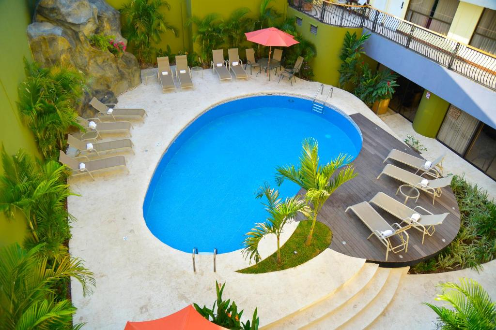
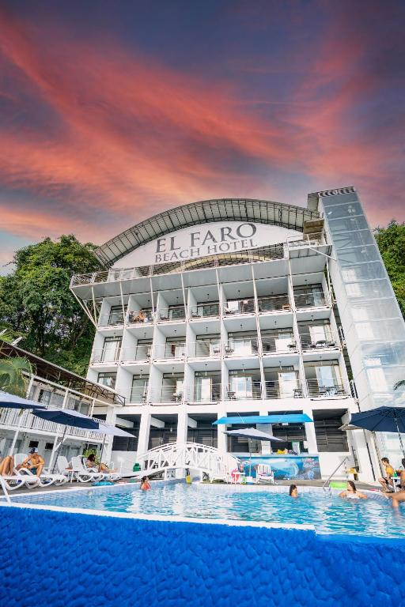
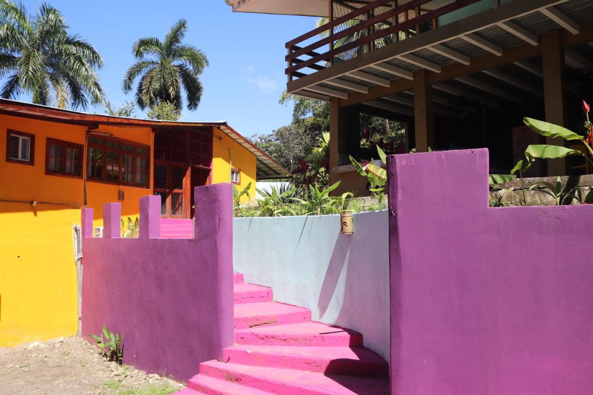
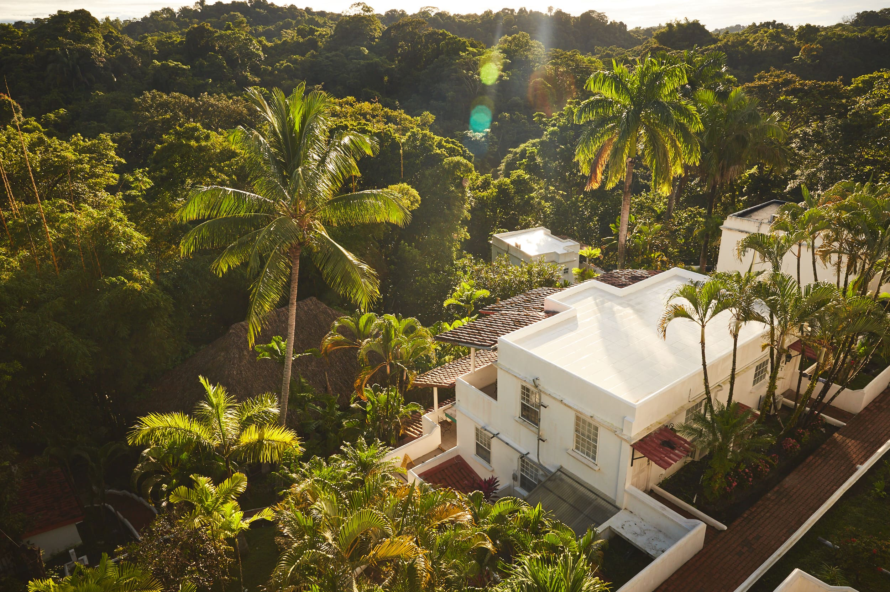
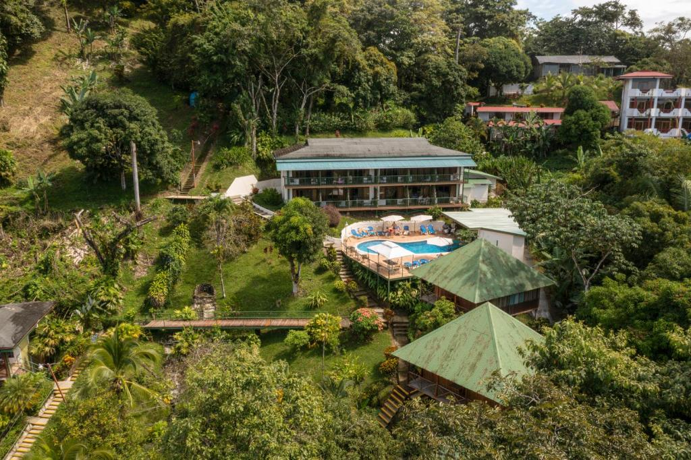
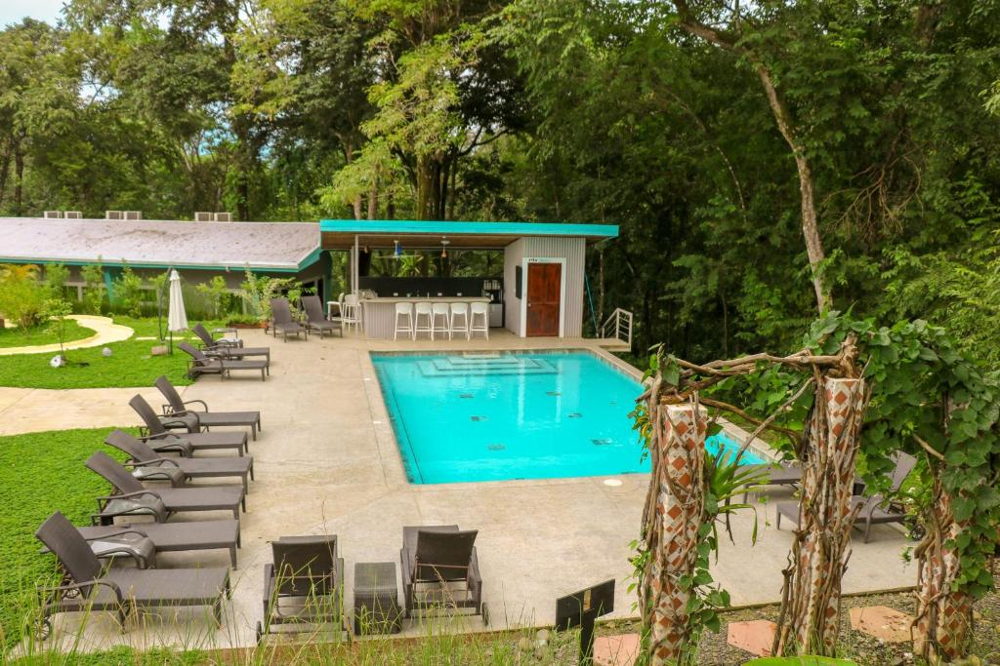
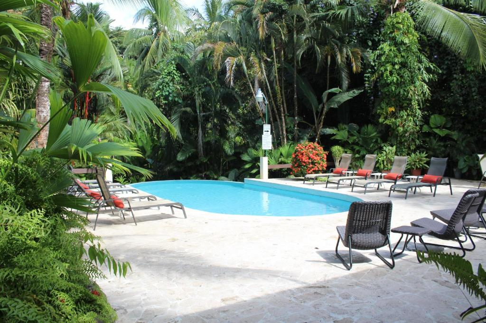
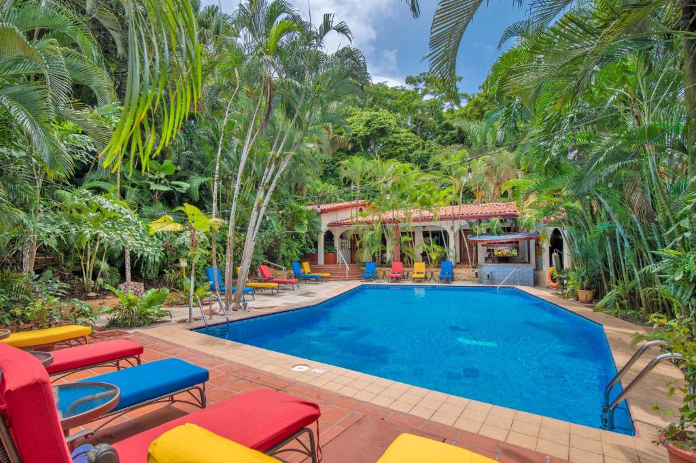

Manuel Antonio
The magic of the beach and the greenery of the forest come together in one place, and the result is a natural paradise. Manuel Antonio is the Protected Wilderness Area that receives the largest number of national and international tourists. In addition to beaches, the Park offers a very humid tropical forest where endangered flora and fauna species coexist, a mangrove swamp, marine environments, islands and a 14-hectare lagoon. Traveling has been creating memorable vacations for thousands of travelers every year. We are a company who cherishes the tropical beauty and unparalleled adventure that Costa Rica has to offer.
-

Best Western Hotel & Casino
This beachfront hotel is located in Quepos, on Costa Rica’s Pacific Coast. It offers an outdoor pool, an on-site casino and air-conditioned rooms with free Wi-Fi and flat-screen cable TV. The rooms at the Best Western Kamuk Hotel & Casino feature tiled floors and beach-style décor. Each one comes with a coffee maker and a private bathroom.
Click to see more -

El Faro Beach Hotel
Offering an infinity pool and free WiFi, El Faro Beach Hotel is located in Manuel Antonio, about 100 m walk from the beachfront and 50 from Manuel Antonio National Park. This property is Costa Rica's only container hotel. Each minimalist and modern accommodation will provide you with air conditioning. There is also a coffee machine available.
Click to see more -

Planet B Hotel
Set in Manuel Antonio, 2 km from La Macha Beach, PLANET B offers accommodation with a fitness centre, free private parking, a garden and a shared lounge. Featuring a tour desk, this property also provides guests with a terrace. The accommodation features a 24-hour front desk, a shuttle service, a shared kitchen and free WiFi throughout the property.
Click to see more -

Selina Manuel Antonio
Offering a year-round outdoor pool and children's playground, Selina Manuel Antonio is situated in Manuel Antonio in the Puntarenas Region, 2.3 km from Manuel Antonio National Park. Guests can enjoy the on-site bar.
Click to see more -

Tabulia Tree
Surrounded by native vegetation and local fauna, Tabulia Tree offers comfortable accommodation in Manuel Antonio. The property features an outdoor swimming pool. Free WiFi access is available in all areas.
Click to see more -

Teva Hotel
Featuring an outdoor swimming pool, a garden as well as a bar, Téva Eco Retreat is located in Quepos, 4.2 km from Manuel Antonio National Park. Located around 2.9 km from Canopy Safari, the hostel is also 3.8 km away from Marina Pez Vela. The accommodation provides free WiFi.
Click to see more -

The Falls
Located in Manuel Antonio, less than 1 km from Espadilla Beach, The Falls at Manuel Antonio provides accommodation with an outdoor swimming pool, free private parking, a garden and a restaurant. Providing a bar, the property is located within 1.7 km of Playitas Beach. The hotel also offers free WiFi as well as a paid airport shuttle service.
Click to see more -

Hotel Villas Lirio
Hotel Villas Lirio offers a beautiful mountain setting within Manuel Antonio National Park. It features an outdoor swimming pool set in tropical gardens.Each spacious, air-conditioned room at the Villas Lirio has Costa Rican-style décor. There is cable TV, free WiFi in public areas and a private bathroom.
Click to see more